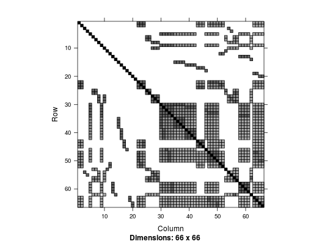

phenodatakingenodatagenocovdatasnpdata
(Phenotypes) A data frame phenodata with 66 rows and 4 variables:
(Kinship) A square matrix kin with 66 rows and 66 columns.
(Genotypes) A matrix genodata with 66 rows and 50 columns.
(Genotypes as covariates) A matrix genocovdata with 66 rows and 50 columns.
(Annotation) A data frame snpdata with 100 rows and 4 variables:
A mixture of unrelated and related individuals were originally simulated in FFBSKAT R package to test methods of the variant-collapsing approach. 50 synthetic SNPs were generated for the association study. A custom kinship matrix is used to express the relationships among individuals. This data set is used here to test the ability of SOLAR to work with a custom kinship matrix in both polygenic and association analyses.
The genotypes are coded in the format such as 1/1, 1/2 and 2/2.
In addition to the original data set from FFBSKAT R package, a matrix of covariates was derived from the genotype data according to the additive model.
data(dat50) str(phenodata)'data.frame': 66 obs. of 4 variables: $ id : num 1 2 3 4 5 6 7 8 9 10 ... $ sex : int 0 1 0 0 0 1 0 1 1 0 ... $ age : int 80 77 56 44 75 79 75 82 77 76 ... $ trait: num -1.763 -1.423 -0.805 0.268 -1.334 ...plotKinship2(2*kin)
str(genodata)chr [1:66, 1:50] "1/1" "1/1" "1/1" "1/2" "1/2" "1/1" "1/1" ... - attr(*, "dimnames")=List of 2 ..$ : chr [1:66] "1" "2" "3" "4" ... ..$ : chr [1:50] "s1" "s2" "s3" "s4" ...genodata[1:5, 1:5]s1 s2 s3 s4 s5 1 "1/1" "1/1" "1/1" "1/1" "1/1" 2 "1/1" "1/1" "1/1" "1/2" "1/1" 3 "1/1" "1/1" "1/1" "2/2" "1/1" 4 "1/2" "1/1" "1/1" "1/2" "1/2" 5 "1/2" "1/1" "1/1" "1/1" "1/1"str(genocovdata)int [1:66, 1:50] 0 0 0 1 1 0 0 0 0 0 ... - attr(*, "dimnames")=List of 2 ..$ : chr [1:66] "1" "2" "3" "4" ... ..$ : chr [1:50] "s1" "s2" "s3" "s4" ...genocovdata[1:5, 1:5]s1 s2 s3 s4 s5 1 0 0 0 0 0 2 0 0 0 1 0 3 0 0 0 2 0 4 1 0 0 1 1 5 1 0 0 0 0# compare with the genotypes genodata[1:5, 1:5]s1 s2 s3 s4 s5 1 "1/1" "1/1" "1/1" "1/1" "1/1" 2 "1/1" "1/1" "1/1" "1/2" "1/1" 3 "1/1" "1/1" "1/1" "2/2" "1/1" 4 "1/2" "1/1" "1/1" "1/2" "1/2" 5 "1/2" "1/1" "1/1" "1/1" "1/1"str(snpdata)'data.frame': 50 obs. of 4 variables: $ name : chr "s1" "s2" "s3" "s4" ... $ chrom : int 1 1 1 1 1 1 1 1 1 1 ... $ position: num 2105324 2105467 2106094 2108138 2109262 ... $ gene : chr "gene1" "gene1" "gene1" "gene1" ...head(snpdata)name chrom position gene 2 s1 1 2105324 gene1 6 s2 1 2105467 gene1 10 s3 1 2106094 gene1 11 s4 1 2108138 gene1 15 s5 1 2109262 gene1 20 s6 1 2110294 gene1